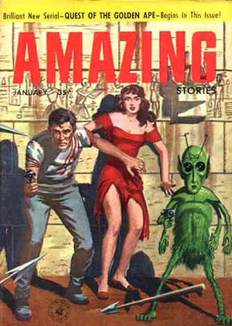

couverture du n° de amazing stories de ce mois-ci, montrant un "petit homme vert"

entre fort worth et lubbock (texas), les équipages usaf de 2 b-25s voient un objet blanc et rond faire des
manœuvres rapides, avec des effets sur la radio et le compas Weinstein, Dominique.
À Yokohama (Japon), Yusuke Matsumura
photographie une soucoupe et crée de la CBA"Saucer over
Yokohama", 1957.
L'amiral Delmer S. Farney déclare qu'aucun appareil terrestre n'est capable de
reproduire les performances des objets volants observés, pénétrant notre atmosphère "High Speed Objects Reported in the Sky", The New York Times, 17 janvier 1957.
Rapport du Renseignement de l'Armée sur une grande boule de métal brillante, un
disque et d'autres ovnis au-dessus de la base APO de l'Armée UFO Evidence, 4, NICAP.
En Indiana, un pilote commercial et de nombreuses autres personnes voient 4
lumières blanches brillantes alignées et un objet en queue plus grand, en forme d'œuf et pulsant UFO Evidence, 5, NICAP.
Au-dessus de Milowka (Pologne), plusieurs témoins voient un objet blanchâtre. Il est
argenté, certains pensent, et rond comme un chapeau. Il se déplace horizontalement à une altitude estimée à
500 m et a un diamètre d'environ 20 m. L'objet brillait comme un miroir dans le Soleil avant de partir à
grande vitesse Hobana, Ion & Weverbergh.
A Milowka, un couple marié est au balcon de leur appartement lorsqu'ils voient 3
sphères brillantes dans le ciel, toutes de taille égale et à la même distance les unes des autres Hobana, Ion & Weverbergh.